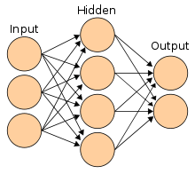

Connectionism
links:
-Connectionism, or neuronlike computing, developed out of attempts to understand how the human brain works at the neural level and, in particular, how people learn and remember. In 1943 the neurophysiologist Warren McCulloch of the University of Illinois and the mathematician Walter Pitts of the University of Chicago published an influential treatise on neural nets and automatons, according to which each neuron in the brain is a simple digital processor and the brain as a whole is a form of computing machine. As McCulloch put it subsequently, “What we thought we were doing (and I think we succeeded fairly well) was treating the brain as a Turing machine.”
